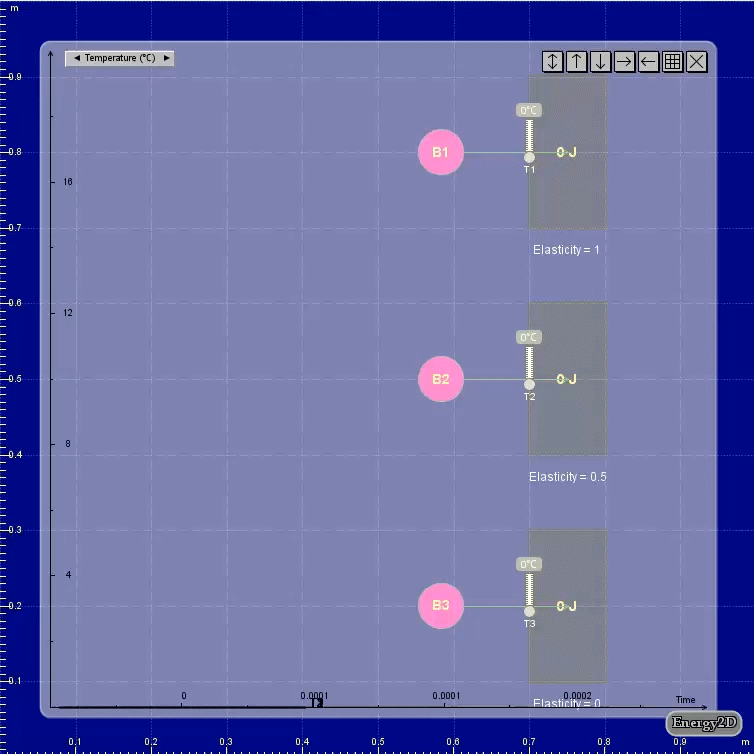
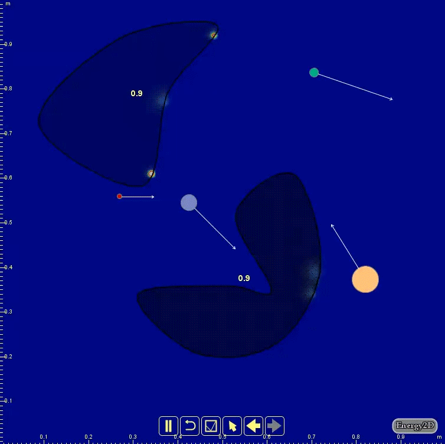

Coupled Fluid-Particle Multiphysics Simulation
Inelastic collisions leave thermal marks, dense particles sink while light ones drift — Energy2D's particle system is coupled to heat and fluid flow.
Multiphysics is a desirable feature of modern engineering computing software. In the development of science, we have gone through the process of singling out a physical law from the complex world that are inherently driven by many other laws at the same time. Such a simplification process seems essential in scientific discovery and has worked out well for scientists for centuries. Engineering, on the other hand, is a process of considering all sorts of possibilities, because the engineered product must work in the real world that is governed by multiple laws under many different circumstances. For the design of mission-critical parts, overlooking the effects of one or two laws might result in disasters. This article introduces some of my earlier work in multiphysics simulations implemented in Energy2D.
Coupling particle dynamics and heat transfer
You may have seen many existing simulations of inelastic collisions that show the changes of speeds and energy of the colliding objects, but the vast majority of them do not show what happens to the lost energy, which is often converted into thermal energy that spreads out through heat transfer. With the multiphysics modeling capabilities of Energy2D, we can now show the complete picture of energy transfer from the mechanical form to the thermal form in a single simulation, as illustrated in Figures 1 and 2.

Figure 1 shows the collisions of three identical balls (mass = 10 kg, speed = 1 m/s) with three fixed objects that have different elasticities (0, 0.5, and 1). The results show that, in the case of the completely inelastic collision, all the kinetic energy of the ball (5 J) is converted into thermal energy of the rectangular hit object (at this point, the particles in Energy2D do not hold thermal energy, but this will be fixed in a future version), whereas in the case of completely elastic collision, the ball B1 does not lose any kinetic energy to the hit object. In the cases of inelastic collisions, you can see the thermal marks created by the collisions. The thermometers placed in the objects also register a rise of temperatures. This view resembles infrared images of floors taken immediately after being hit by tennis balls.

Energy2D supports particle collisions with all the 2D shapes that it provides: rectangles, ellipses, polygons, and blobs. Figure 2 shows the thermal marks on two blobs created by a few bouncing particles.
Coupling particle dynamics with fluid dynamics
The technique to couple particle and fluid is commonly known as discrete phase models in the computational fluid dynamics (CFD) community. It is used to model things such as suspension particles in fluids.
Particles in Energy2D observe collision dynamics among themselves and interact with fluid and heat flows: particles can not only be moved by the fluid but also exert reaction force and transfer heat to the fluid. Figure 3 shows the motion of two types of particles driven by a convective flow. Depending on its density (relative to the fluid density), a particle may be buoyant enough to flow with the fluid or so heavy that it must sink to the bottom. In Figure 3, the black particles are the heavy ones and the white ones are the light ones; the convective force is not strong enough to move the black ones.

Particles can also transfer physical properties such as energy and momentum to the fluid while they are moving. Figure 4 shows the heat traces left by fireballs of different sizes.

Figure 5 shows how fans in Energy2D can be used to create fluid flows that drives particle motions.

Conclusion
In summary, Energy2D has provided some rudimentary multiphysics capabilities. We hope to carry on this line of work in the future.
← Back to Energy2D